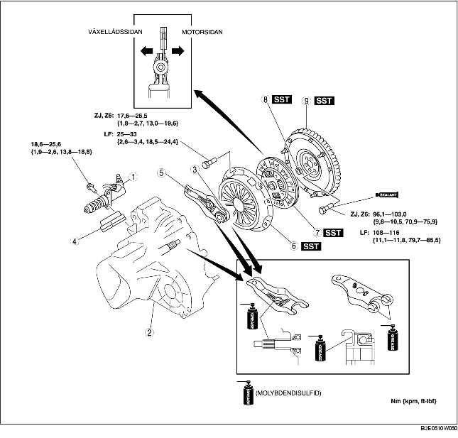

1. Demontera i den ordning som anges i tabellen.
2. Montera i omvänd ordning mot demonteringen.

.
|
1
|
Urkopplingscylinder
|
|
2
|
Manuell växellåda
|
|
3
|
Urtrampningslager
|
|
4
|
Damask
|
|
5
|
Urkopplingsgaffel
|
|
6
|
Tryckplatta
|
|
7
|
Kopplingslamell
|
|
8
|
Stödlager
|
|
9
|
Svänghjul
|
1. Avlägsna gaffelstödet innan urkopplingsgaffeln demonteras.
1. Montera specialverktygen.
2. Lossa bultarna ett varv i taget och växla mellan olika bultar tills fjäderspänningen släpper.
3. Demontera tryckplatta och kopplingslamell.
1. Använd specialverktyget för att demontera stödlagret.
1. Använd specialverktygen för att demontera stödlagret.
ZJ, Z6
LF
1. Håll fast svänghjulet med specialverktyget.
2. Lossa bultarna lite i taget.
3. Demontera svänghjulet.
4. Kontrollera om det läcker olja från vevaxelns bakre oljetätning.
1. Montera svänghjulet på vevaxeln.
2. Om du återanvänder bultarna, rengör gängor och hål och applicera sedan gänglåsning på gängorna.
3. Dra åt svänghjulets låsbultar för hand.
4. Montera specialverktyget på svänghjulet.
5. Dra åt svänghjulets låsbultar lite i taget.
1. Håll kopplingsskivan i läge med hjälp av specialverktyget.
1. Montera specialverktygen.
2. Dra åt bultarna lite i taget.